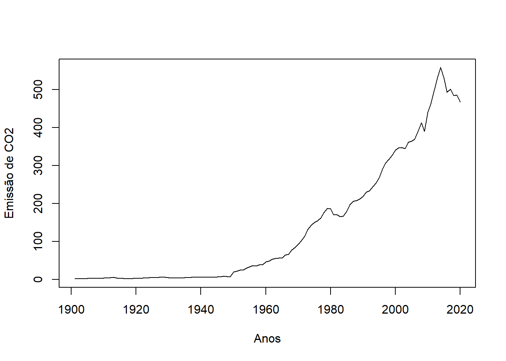
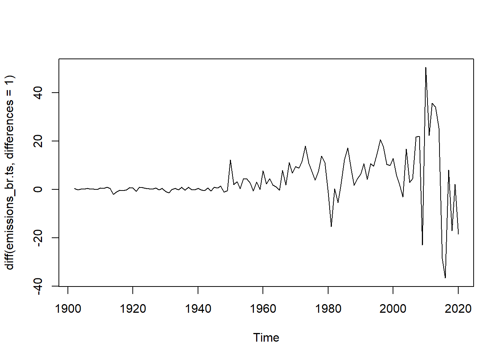
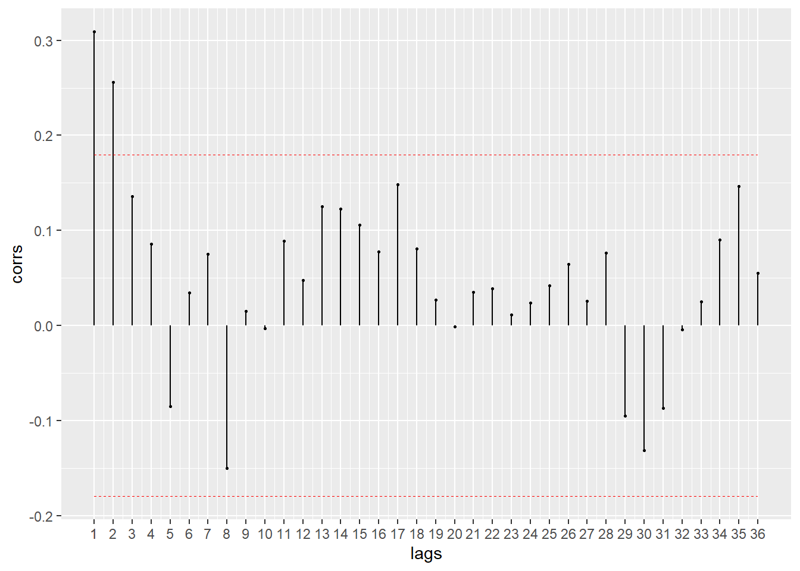
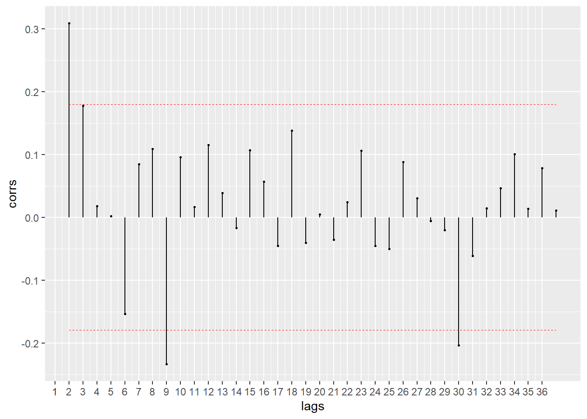
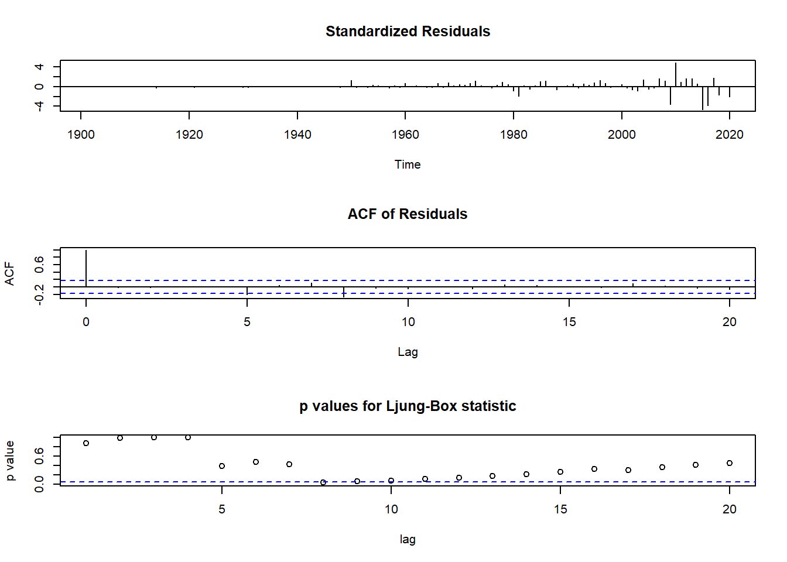
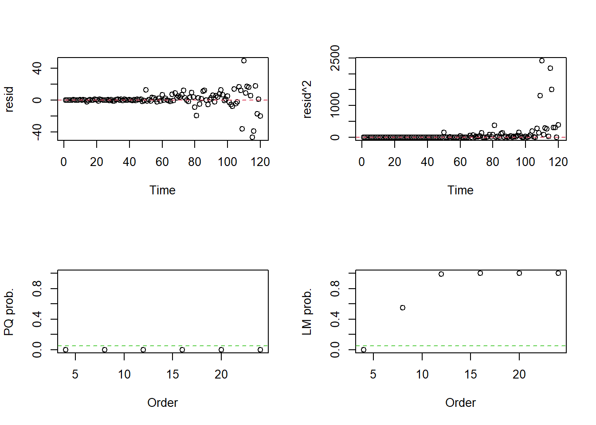
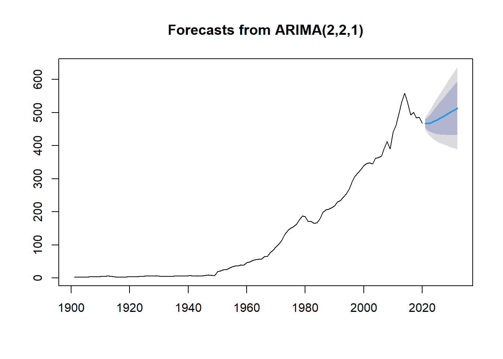

Aplicação 1
Para a aplicação, foi utilizada uma base de dados de emissões de \(CO_2\) de diversos países ao longo dos anos de 1750 a 2020 da plataforma Kaggle. Além dos valores de emissão de \(CO_2\), também apresenta valores de emissão de metano e óxido nitroso.
# Carregando base de dados
# Fonte: https://www.kaggle.com/datasets/kvnxls/co2-emissions-dataset-1750-2020
emissions <- read.csv("Data/co2data.csv", sep = ",", dec = ".")
View(emissions)
str(emissions)## 'data.frame': 25989 obs. of 60 variables:
## $ iso_code : chr "AFG" "AFG" "AFG" "AFG" ...
## $ country : chr "Afghanistan" "Afghanistan" "Afghanistan" "Afghanistan" ...
## $ year : int 1949 1950 1951 1952 1953 1954 1955 1956 1957 1958 ...
## $ co2 : num 0.015 0.084 0.092 0.092 0.106 0.106 0.154 0.183 0.293 0.33 ...
## $ co2_per_capita : num 0.002 0.011 0.012 0.012 0.013 0.013 0.019 0.022 0.034 0.038 ...
## $ trade_co2 : num NA NA NA NA NA NA NA NA NA NA ...
## $ cement_co2 : num NA NA NA NA NA NA NA NA NA NA ...
## $ cement_co2_per_capita : num NA NA NA NA NA NA NA NA NA NA ...
## $ coal_co2 : num 0.015 0.021 0.026 0.032 0.038 0.043 0.062 0.062 0.077 0.092 ...
## $ coal_co2_per_capita : num 0.002 0.003 0.003 0.004 0.005 0.005 0.008 0.007 0.009 0.011 ...
## $ flaring_co2 : num NA NA NA NA NA NA NA NA NA NA ...
## $ flaring_co2_per_capita : num NA NA NA NA NA NA NA NA NA NA ...
## $ gas_co2 : num NA NA NA NA NA NA NA NA NA NA ...
## $ gas_co2_per_capita : num NA NA NA NA NA NA NA NA NA NA ...
## $ oil_co2 : num NA 0.063 0.066 0.06 0.068 0.064 0.092 0.121 0.216 0.238 ...
## $ oil_co2_per_capita : num NA 0.008 0.008 0.008 0.008 0.008 0.011 0.014 0.025 0.027 ...
## $ other_industry_co2 : num NA NA NA NA NA NA NA NA NA NA ...
## $ other_co2_per_capita : num NA NA NA NA NA NA NA NA NA NA ...
## $ co2_growth_prct : num NA 475 8.7 0 16 ...
## $ co2_growth_abs : num NA 0.07 0.007 0 0.015 0 0.048 0.029 0.11 0.037 ...
## $ co2_per_gdp : num NA 0.009 0.01 0.009 0.01 0.01 0.014 0.016 0.025 0.027 ...
## $ co2_per_unit_energy : num NA NA NA NA NA NA NA NA NA NA ...
## $ consumption_co2 : num NA NA NA NA NA NA NA NA NA NA ...
## $ consumption_co2_per_capita : num NA NA NA NA NA NA NA NA NA NA ...
## $ consumption_co2_per_gdp : num NA NA NA NA NA NA NA NA NA NA ...
## $ cumulative_co2 : num 0.015 0.099 0.191 0.282 0.388 ...
## $ cumulative_cement_co2 : num NA NA NA NA NA NA NA NA NA NA ...
## $ cumulative_coal_co2 : num 0.015 0.036 0.061 0.093 0.131 0.174 0.236 0.298 0.375 0.467 ...
## $ cumulative_flaring_co2 : num NA NA NA NA NA NA NA NA NA NA ...
## $ cumulative_gas_co2 : num NA NA NA NA NA NA NA NA NA NA ...
## $ cumulative_oil_co2 : num NA 0.063 0.129 0.189 0.257 0.321 0.413 0.534 0.75 0.988 ...
## $ cumulative_other_co2 : num NA NA NA NA NA NA NA NA NA NA ...
## $ trade_co2_share : num NA NA NA NA NA NA NA NA NA NA ...
## $ share_global_co2 : num 0 0 0 0 0 0 0 0 0 0 ...
## $ share_global_cement_co2 : num NA NA NA NA NA NA NA NA NA NA ...
## $ share_global_coal_co2 : num 0 0 0 0 0 0 0 0 0 0 ...
## $ share_global_flaring_co2 : num NA NA NA NA NA NA NA NA NA NA ...
## $ share_global_gas_co2 : num NA NA NA NA NA NA NA NA NA NA ...
## $ share_global_oil_co2 : num NA 0 0 0 0 0 0 0 0.01 0.01 ...
## $ share_global_other_co2 : num NA NA NA NA NA NA NA NA NA NA ...
## $ share_global_cumulative_co2 : num 0 0 0 0 0 0 0 0 0 0 ...
## $ share_global_cumulative_cement_co2 : num NA NA NA NA NA NA NA NA NA NA ...
## $ share_global_cumulative_coal_co2 : num 0 0 0 0 0 0 0 0 0 0 ...
## $ share_global_cumulative_flaring_co2: num NA NA NA NA NA NA NA NA NA NA ...
## $ share_global_cumulative_gas_co2 : num NA NA NA NA NA NA NA NA NA NA ...
## $ share_global_cumulative_oil_co2 : num NA 0 0 0 0 0 0 0 0 0 ...
## $ share_global_cumulative_other_co2 : num NA NA NA NA NA NA NA NA NA NA ...
## $ total_ghg : num NA NA NA NA NA NA NA NA NA NA ...
## $ ghg_per_capita : num NA NA NA NA NA NA NA NA NA NA ...
## $ total_ghg_excluding_lucf : num NA NA NA NA NA NA NA NA NA NA ...
## $ ghg_excluding_lucf_per_capita : num NA NA NA NA NA NA NA NA NA NA ...
## $ methane : num NA NA NA NA NA NA NA NA NA NA ...
## $ methane_per_capita : num NA NA NA NA NA NA NA NA NA NA ...
## $ nitrous_oxide : num NA NA NA NA NA NA NA NA NA NA ...
## $ nitrous_oxide_per_capita : num NA NA NA NA NA NA NA NA NA NA ...
## $ population : num 7624058 7752117 7840151 7935996 8039684 ...
## $ gdp : num NA 9.42e+09 9.69e+09 1.00e+10 1.06e+10 ...
## $ primary_energy_consumption : num NA NA NA NA NA NA NA NA NA NA ...
## $ energy_per_capita : num NA NA NA NA NA NA NA NA NA NA ...
## $ energy_per_gdp : num NA NA NA NA NA NA NA NA NA NA ...Como o nosso interesse são as emissões do Brasil, foi realizada uma nova base de dados com somente as emissões brasileiras de \(CO_2\) ao longo dos anos.
# Filtrando somente as emissões do Brasil
emissions_br <- emissions %>%
filter(country == 'Brazil')
View(emissions_br)Porém, gostaríamos de analisar somente as emissões de \(CO_2\) do Brasil. Dessa forma, iremos separar em uma base de dados somente os dados que interessam para a análise: País e Emissão de \(CO_2\).
# Separando somente as informações importantes para a análise
# Para a análise, precisamos somente da coluna de ano e de concentração de CO2
emissions_br <- emissions_br[c(3,4)]
# Mudando o nome das linhas para os anos da série temporal
year <- emissions_br[,1]
row.names(emissions_br) <- year
# Criando tabela somente com as concentrações de CO2 como coluna
emissions_br <- emissions_br[c(2)]A partir disso, realiza-se a análise exploratória da base de dados:
# EDA
str(emissions_br)## 'data.frame': 120 obs. of 1 variable:
## $ co2: num 2.1 2.51 2.44 2.62 2.8 ...head(emissions_br)## co2
## 1901 2.103
## 1902 2.506
## 1903 2.440
## 1904 2.620
## 1905 2.799
## 1906 3.206summary(emissions_br)## co2
## Min. : 2.103
## 1st Qu.: 5.513
## Median : 47.998
## Mean :135.321
## 3rd Qu.:221.342
## Max. :557.901Agora, é necessário transformar a base de dados em uma série temporal. Isso será realizado a partir da função ts().
# Criando a série temporal (ts)
emissions_br.ts <- ts(emissions_br$co2,start=1901, end=2020, frequency=1)Criada a série temporal, será realizada a estapa de Identificação utilizando a análise gráfica para obter mais conhecimento acerca da série. Portanto, iremos plotar a série temporal:
# Análise gráfica
# Tendência de aumento
plot.ts(emissions_br.ts, ylab="Emissão de CO2", xlab="Anos")
# Comentários: Tendência de aumento clara, não aparenta possuir sazonalidade já que não existem padrões que se repetem ao longo dos anosConforme apresentado no gráfico, foi possível verificar que a série apresenta uma tendência de aumento clara. Além disso, não possui sazonalidade, já que não existem padrões que se repetem ao longo do ano.
Sabe-se que uma série temporal é estacionária quando a sua média, variância e autocorrelação são contantes ao longo do tempo. Ou seja, uma série é estacionária quando não é dependente do tempo e não tem uma tendência ou sazonalidade. Como já foi verificado graficamente que a série possui uma tendência de aumento ao longo do tempo, é necessário verificar a partir de um teste estatístico se a série é estacionária.
O teste que será utilizado é o Teste de Dickey-Fuller Aumentado (ADF). A hipótese nula do teste é que a série temporal possui uma raiz única, ou seja, não é estacionária. Portanto, se o p-value do teste for menor que o nível de significância \(\alpha\) (5% ou 1%), a hipótese nula é rejeitada. Caso o p-value seja maior, a hipótese nula não é rejeitada e a série é não-estacionária.
adf.drift <- urca::ur.df(y=emissions_br.ts, type= "drift", lag=24, selectlags="AIC")
# Utiliza-se "drift" como argumento quando a série temporal possui tendência
# Estatística de teste: Estacionariedade
adf.drift@teststat ## tau2 phi1
## statistic 1.765614 3.819948adf.drift@cval #valores tabulados por MacKinnon (1996)## 1pct 5pct 10pct
## tau2 -3.46 -2.88 -2.57
## phi1 6.52 4.63 3.81 adf.test(emissions_br.ts, alternative="stationary", k=0)##
## Augmented Dickey-Fuller Test
##
## data: emissions_br.ts
## Dickey-Fuller = -1.2795, Lag order = 0, p-value = 0.8758
## alternative hypothesis: stationaryA partir dos valores do teste ADF, é possível afirmar que a estatística teste (1,765614) é maior do que o valor máximo associado ao nível de confiança (-2,88). Dessa forma, conclui-se que a série não é estacionária. Outra função que pode ser usada para o teste ADF é a adf.test() do pacote tseries. O teste também mostra que a série não é estacionária, já que o p-value é maior que o nível de significância de 5%.
Portanto, para transformá-la em estacionária, será realizada uma diferenciação:
ts.plot(diff(emissions_br.ts, differences = 1))
# Com uma diferenciação é possível verificar que a série está estacionária na média. A partir da função adf.test será verificado se a série será estacionária com uma diferenciação:
# Conferindo se a série realmente é estacionária
# H0: não é estacionária
# H1: é estacionária
adf.test(diff(emissions_br.ts, differences = 1), alternative="stationary", k=0)## Warning in adf.test(diff(emissions_br.ts, differences = 1), alternative =
## "stationary", : p-value smaller than printed p-value##
## Augmented Dickey-Fuller Test
##
## data: diff(emissions_br.ts, differences = 1)
## Dickey-Fuller = -7.9529, Lag order = 0, p-value = 0.01
## alternative hypothesis: stationaryComo o p-value apresenta o valor de 0,01, é possível afirmar que, a um intervalo de confiança de 95%, a série temporal é estacionária.
Agora que a série é estacionária, seguiremos para a próxima fase (Identificação).
# Identificação
#FAC
BETS::corrgram(diff(emissions_br.ts), lag.max = 36, style = "normal")
# Última observação significativa: 2
#FACP
BETS::corrgram(diff(emissions_br.ts), type = "partial", lag.max = 36, style = "normal")
# Última observação significativa: 1 ou 2A partir disso, verifica-se que a Função de Autocorrelação, que determina a ordem das médias móveis (q), indica que a última observação significativa é a 2. E a Função de Autocorrelação Parcial, que determina a ordem p da componente autoregressiva, indica que a última observação significativa é a 1 ou 2. Dessa forma, o modelo que seria utilizado seria o ARIMA (2,1,2) ou (1,1,2).
Para verificar se o modelo escolhido ARIMA (2,2,1) é o melhor fit, iremos utilizar a função auto.arima().
auto.arima(emissions_br.ts)## Series: emissions_br.ts
## ARIMA(2,2,1)
##
## Coefficients:
## ar1 ar2 ma1
## 0.2411 0.1609 -0.9677
## s.e. 0.0976 0.0968 0.0300
##
## sigma^2 = 101.8: log likelihood = -439.64
## AIC=887.27 AICc=887.63 BIC=898.36Como a FAC e FACP não foram claras, na fase de Estimação, para verificar se o modelo escolhido apresenta os critérios AIC e BIC minimizados, utilizou-se a função auto.arima() que retorna o modelo de melhor ajuste à série temporal de estudo. Como a função retornou o modelo ARIMA (2,2,1), este será utilizado, já que é o que é o modelo de melhor ajuste e, portanto, apresenta os critérios de informação minimizados.
fit_co2 <- arima(emissions_br.ts, c(2,2,1))O próximo passo é verificar os resíduos do modelo:
diag <- tsdiag(fit_co2, gof.lag = 20) A partir do gráfico Standardized Residuals, visualmente os dados aparentam ter homocedasticidade e média zero, o que indica normalidade. Além disso, é possível verificar a existência de outliers, já que observações fora do intervalo [-3;3] seriam observações atípicas. Portanto, aparentemente existem alguns outliers a partir do ano 2000. A FAC dos resíduos (segundo gráfico) mostra que não há nenhuma defasagem significativa, portanto, o modelo ARIMA (2,2,1) está representando bem a série temporal. O gráfico p-values for Ljung-Box statistic não é confiável, já que os p-values são calculados sem levar em conta o fato de os resíduos terem sido gerados a partir de um modelo ajustado. Por mais que a conclusão deste gráfico mostre que não há dependência linear entre os resíduos, a informação não é confiável.
O teste de Ljung & Box será realizado para testar a autocorrelação dos resíduos:
Box.test(fit_co2$residuals, lag=24, type="Ljung-Box", fitdf = 2)##
## Box-Ljung test
##
## data: fit_co2$residuals
## X-squared = 20.466, df = 22, p-value = 0.5539O teste mostra a ausência de autocorrelação linear nos resíduos, já que o p-value é maior que 0.05. Portanto, a hipótese nula de que a série temporal não possui autocorrelação até o lag 24 não pode ser rejeitada.
A seguir será testada a estacionariedade da variância e, para isso, o teste Multiplicador de Lagrange para heterocedasticidade condicional autoregressiva será utilizado. Além disso, também será testada a normalidade dos resíduos com o teste de Shapiro-Wilk.
# Variância
arch.test(fit_co2)## ARCH heteroscedasticity test for residuals
## alternative: heteroscedastic
##
## Portmanteau-Q test:
## order PQ p.value
## [1,] 4 32.7 1.40e-06
## [2,] 8 85.0 4.66e-15
## [3,] 12 85.7 3.39e-13
## [4,] 16 85.8 1.46e-11
## [5,] 20 85.9 3.89e-10
## [6,] 24 85.9 6.75e-09
## Lagrange-Multiplier test:
## order LM p.value
## [1,] 4 59.504 7.50e-13
## [2,] 8 5.908 5.51e-01
## [3,] 12 2.989 9.91e-01
## [4,] 16 1.792 1.00e+00
## [5,] 20 1.259 1.00e+00
## [6,] 24 0.801 1.00e+00
#Normalidade dos resíduos
shapiro.test(fit_co2$residuals)##
## Shapiro-Wilk normality test
##
## data: fit_co2$residuals
## W = 0.71345, p-value = 5.383e-14Em relação à variância, com p-value menor que 0.05, a hipótese nula de homocedasticidade da variância é rejeitada. No caso do teste de Shapiro-Wilk, verifica-se que como p-value é menor que 0.05, a hipótese nula de normalidade é rejeitada. Portanto, é possível verificar que os resíduos do modelo não estão adequados.
Após a análise dos resíduos, mesmo utilizando o modelo que minimiza os critérios de informação (AIC e BIC) e apresenta ausência de autocorrelação linear nos resíduos, é possível afirmar que o modelo escolhido não é adequado para representar a série temporal devido a heterocedasticidade e não-normalidade dos resíduos. É importante que a análise de resíduos seja realizada sempre, já que, se não tivesse sido feita na aplicação, o modelo pareceria adequado.
Apesar dos problemas da análise de resíduos, a etapa de Previsão será realizada para fins didáticos:
# Estimação
library(forecast)
forecast_co2 <- forecast::forecast(object=fit_co2, h=12)
plot(forecast_co2)
Dessa forma, a partir da função accuracy() é possível analisar se o modelo é adequado:
# Métricas
accuracy(fit_co2)## ME RMSE MAE MPE MAPE MASE ACF1
## Training set 0.7565773 9.877258 4.93605 0.7380682 7.166957 0.748034 -0.01481926Pelas métricas, o MAPE (Mean Absolute Percentage Error) demonstra que o erro de previsão está em 7,167%, o que, teoricamente, é um bom ajuste. Apesar da métrica adequada, como já analisamos, os resíduos do modelo não estão adequados e, dessa forma, é possível afirmar que o modelo também não está.
O problema da heterocedasticidade pode ser resolvido a partir da inclusão de mais variáveis no modelo. A não-normalidade dos resíduos pode ser resolvida a partir de uma transformação logarítmica ou uma transformação de Box-Cox.